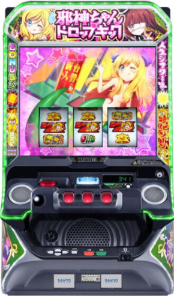

目次

L邪神ちゃんドロップキックJASHIN-CHAN DROPKICK ｜ サンスリー
💥 業界初「ちゃんすラインシステム」搭載。スイカ成立で15G間入賞ラインが変化。メインAT純増約2.5枚/G、ボーナス・上位AT約5.0枚/G。天井は799G+α＋10スルー天井のダブル天井。
L邪神ちゃんドロップキック スペック・機械割
| 設定 | AT初当たり | ボーナス確率 | 機械割 |
|---|---|---|---|
| 1 | 1/758.2 | 1/253.1 | 97.8% |
| 2 | 1/746.3 | 1/248.1 | 98.6% |
| 3 | 1/722.8 | 1/241.6 | 100.4% |
| 4 | 1/655.9 | 1/222.5 | 106.1% |
| 5 | 1/615.9 | 1/211.8 | 110.4% |
| 6 | 1/606.2 | 1/210.0 | 114.1% |
遊技時間別・理論差枚数の目安
| 設定 | 機械割 | 差枚数/1h | 差枚数/3h | 差枚数/5h | 差枚数/8h |
|---|---|---|---|---|---|
| 1 | |||||
| 2 | |||||
| 3 | |||||
| 4 | |||||
| 5 | |||||
| 6 |
L邪神ちゃんドロップキック 小役確率
全設定共通
| 小役 | 確率 | 備考 |
|---|---|---|
| リプレイ | 1/7.3 | — |
| ベル | 1/7.0 | — |
| スイカ合算 | 1/40.2 | ちゃんすライン発動トリガー |
| 邪神ちゃん揃い合算 | 1/226.0 | レア役 |
| 邪神ちゃん揃い（高確中） | 1/3.3 | 高確率中のみ |
| 純ハズレ | 1/528.6 | — |
ℹ️ 小役確率は全設定共通です。設定判別は小役ではなく、ボーナス確率・AT初当たり確率・設定示唆演出を中心に行ってください。
L邪神ちゃんドロップキック 設定判別ポイント
- ① ボーナス確率（主要指標）：設定1（1/253.1）〜設定6（1/210.0）で約17%の差。最も設定差が大きく、サンプルも取りやすい。特に設定4（1/222.5）から当選率が急上昇。
- ② AT初当たり確率（第2指標）：設定1（1/758.2）〜設定6（1/606.2）で約20%の差。AT確率は重いがその分設定差も大きく、3000G以上のサンプルで傾向が見えてくる。
- ③ 機械割の設定差：設定3で100%超え（100.4%）、設定4で一気に106.1%まで上昇。設定4以上は明確な勝ちスペック。
- ④ AT終了画面：「水着」で設定4以上濃厚、「パジャマ」で設定5以上濃厚、「全員集合」で設定6濃厚。最も手軽な設定判別要素です。
- ⑤ シール・クジラッキー：シールの「リエール＆ペルセポネ1世」で設定4以上濃厚、「エキュート＆アトレ」で設定6濃厚。クジラッキーは銅（設定2以上）〜虹（設定6濃厚）の5段階。
- ⑥ 小悪魔ボーナス中キャラ：1回のボーナスで高設定示唆キャラが4回登場すると設定4以上濃厚。
L邪神ちゃんドロップキック 天井・リセット
| 天井種別 | 条件 | 恩恵 |
|---|---|---|
| G数天井 | ボーナス間最大799G+α | ボーナス確定 |
| スルー天井 | ボーナス→AT非当選10回連続 | AT確定 |
| 周期天井 | ちゃんすライン5周期到達 | CZ当選 |
モード別天井G数
| モード | 天井G数 | チャンスゾーン |
|---|---|---|
| 通常A | 749G+α | 200G・400G・600G付近 |
| 通常B | 749G+α | 100G・300G・500G付近 |
| 通常C | 599G+α | 100G・200G・300G・500G付近 |
| 特殊 | 799G+α | なし |
| 天国A | 99G以内 | ボーナス濃厚 |
| 天国B | 99G以内 | ボーナス濃厚＋次回天国濃厚 |
L邪神ちゃんドロップキック AT詳細
基本性能
| 項目 | 内容 |
|---|---|
| メインAT「人生シアター」 | 純増約2.5枚/G・初期50G |
| 上位AT「極上人生シアター」 | 純増約5.0枚/G |
| コイン持ち | 約30.7G/50枚 |
| ちゃんすラインシステム | スイカ成立で入賞ラインが15G間変化（業界初） |
| モード貫通 | AT中もモードは進行し転落しない |
ボーナス3種
| ボーナス名 | 特徴 |
|---|---|
| EPISODE BONUS | AT「人生シアター」濃厚 |
| BIG BONUS | AT抽選あり |
| 小悪魔BONUS | CZ「3戦突破ゆりねバトル」へ移行 |
上乗せ特化ゾーン
| 名称 | タイプ | 継続率 |
|---|---|---|
| 邪神ちゃんす | ST型 | 37〜91% |
| ゆりねバトル | バトル型 | 50〜90% |
L邪神ちゃんドロップキック 天井期待値
通常時（設定1）
| 開始G | 等価 | 5.6枚交換 |
|---|---|---|
| 300G | +42pt | -750pt |
| 450G | +1,048pt | +257pt |
| 550G | +2,114pt | +1,322pt |
| 750G | +5,928pt | +5,137pt |
リセット後（設定変更時）
| 開始G | 等価 | 5.6枚交換 |
|---|---|---|
| 300G | +1,099pt | +354pt |
| 400G | +2,490pt以上 | +1,000pt以上 |
| 550G | +5,497pt | +4,751pt |
L邪神ちゃんドロップキック 設定示唆演出
AT終了画面
| 画面 | 示唆内容 |
|---|---|
| 邪神ちゃん / ミノス / メデューサ | デフォルト |
| ぺこら / ぽぽろん | 偶数設定示唆 |
| ゆりねA / B | 高設定示唆 |
| 悪だくみ | 設定2以上濃厚 |
| 水着 | 設定4以上濃厚 |
| パジャマ | 設定5以上濃厚 |
| 全員集合 | 設定6濃厚 |
シールの設定示唆
| シール | 示唆内容 |
|---|---|
| 芽依 | 奇数設定示唆 |
| 遊佐＆氷ちゃん | 偶数設定示唆 |
| リエール＆ペルセポネ1世 | 設定4以上濃厚 |
| エキュート＆アトレ | 設定6濃厚 |
クジラッキー
| 色 | 示唆内容 |
|---|---|
| 銅 | 設定2以上 |
| 銀 | 設定3以上 |
| 金 | 設定4以上 |
| キリン柄 | 設定5以上 |
| 虹 | 設定6濃厚 |
ℹ️ 小悪魔ボーナス中キャラ紹介で高設定示唆キャラが1回のボーナスで4回登場すると設定4以上濃厚。初当たり小悪魔ボーナスを除く全ボーナス終了画面でクジラッキー出現の可能性があります。
L邪神ちゃんドロップキック 設定変更・朝一恩恵
| 項目 | 内容 |
|---|---|
| 天井短縮 | 799G → 599Gに短縮 |
| モード移行 | 通常C or 天国モードからスタート |
| 周期天井 | いずれか1ラインが1周期に短縮 |
L邪神ちゃんドロップキック 打ち方・技術介入
通常時
- 順押しフリー打ちでOK。レア役はスイカと邪神ちゃん図柄揃いの2種類で、全ライン有効のため目押し不要です。
- 左リール邪神ちゃん（⑫番）狙いで小役フォロー可能。
やめどき
- ボーナス後：即やめ or 天国（99G以内）確認後やめ。設定示唆演出でモードを確認しましょう。
- AT後：引き戻しの可能性があるため、50G程度様子を見てからやめるのがおすすめです。
- モード示唆：5回先までのモードが決まっているため、示唆演出で天国の可能性が低ければ即やめも有効。
設定判別ツール
総ゲーム数・ボーナス回数・AT回数を入力してください。複合的に各設定の出現しやすさを推定します。
L邪神ちゃんドロップキック よくある質問
L邪神ちゃんドロップキックの設定6機械割は？
設定6の機械割は114.1%です。設定1が97.8%で、設定3（100.4%）から機械割100%を超えます。メインAT純増約2.5枚/G、ボーナス・上位AT約5.0枚/Gの仕様です。
L邪神ちゃんドロップキックの天井は何ゲームですか？
天井はボーナス間799G+αで到達します。また、ボーナスからAT非当選が10回連続する「10スルー天井」も搭載しています。天井到達時はAT確定です。
L邪神ちゃんドロップキックの設定判別で重要な指標は？
ボーナス確率が主要指標です。設定1（1/253.1）〜設定6（1/210.0）で約17%の差があり、特に設定4以上で当選率が大きく上昇します。AT初当たり確率も設定1（1/758.2）〜設定6（1/606.2）と差が大きいので、両方を合わせて判断しましょう。
L邪神ちゃんドロップキックのやめ時はいつですか？
AT終了後、有利区間リセットを確認してから即やめが基本です。天井799G+αのため、ハマり台の天井狙いは約550G以降が目安。10スルー天井も搭載しているため、スルー回数も確認しましょう。
「ちゃんすラインシステム」とは？
業界初の新システムで、スイカ成立時に入賞ラインが15G間「ちゃんすライン」に変化します。ちゃんすライン中はボーナスやATの抽選が優遇され、高設定ほど恩恵が大きくなる可能性があります。
L邪神ちゃんドロップキックのコイン持ちは？
通常時のコイン持ちは約30.7G/50枚です。スマスロのため実際にはpt管理となりますが、天井799G+αまで約1,300ptが目安です。
設定変更（リセット）時の恩恵は？
設定変更後は天井が799Gから599Gに短縮され、通常C or 天国モードからスタートします。周期天井も1ラインが1周期に短縮されるため、朝一は非常に有利です。等価300G〜で天井狙いが成立します。
天井期待値の狙い目は何ゲームからですか？
通常時は等価450G〜、5.6枚交換550G〜がプラス期待値の目安です。リセット後は等価300G〜、5.6枚交換400G〜。750Gからは等価で+5,928ptと高期待値です。
モードは何種類ありますか？
通常A・通常B・通常C・特殊・天国A・天国Bの6種類です。5回先までのモードがあらかじめ決まっており、AT中もモードは貫通して進行します。通常Cは天井599Gと浅く、天国A/Bは99G以内にボーナス濃厚です。
AT終了画面で設定判別できますか？
はい。「水着」で設定4以上濃厚、「パジャマ」で設定5以上濃厚、「全員集合」で設定6濃厚です。他にもシールやクジラッキーの色で設定示唆があります。
打ち方にコツはありますか？
順押しフリー打ちでOKです。レア役はスイカと邪神ちゃん図柄揃いの2種類で全ライン有効のため、目押し不要で遊技できます。左リール邪神ちゃん（⑫番）狙いで小役フォローも可能です。
公式PR動画
（動画情報は準備中です）